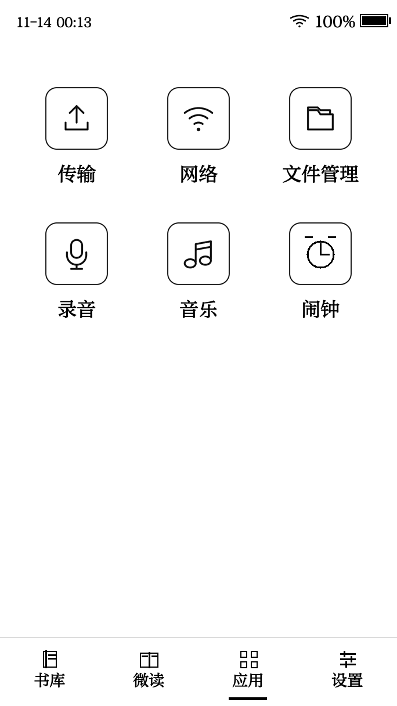

02 / 系统概览

11-14 10:24
系统
实时监控 · 每 2 秒更新
CPU 使用率
24%SRAM384 KiB
61%PSRAM16 MiB
39%Flash16 MiB
73%内存为可分配堆 · Flash 不含 SD 卡
UE 原型 · 可点击操作 · 数值为模拟数据
02 / 系统概览

内存为可分配堆 · Flash 不含 SD 卡
UE 原型 · 可点击操作 · 数值为模拟数据